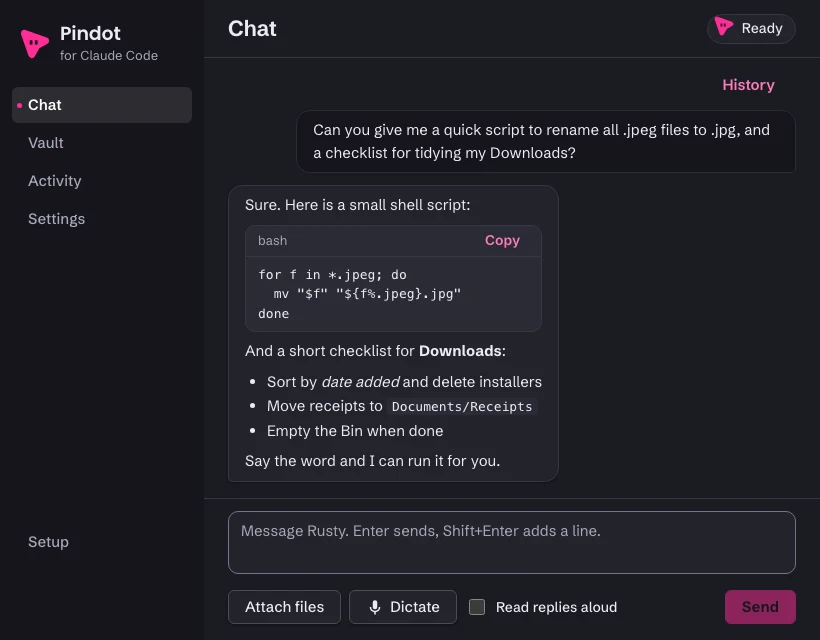
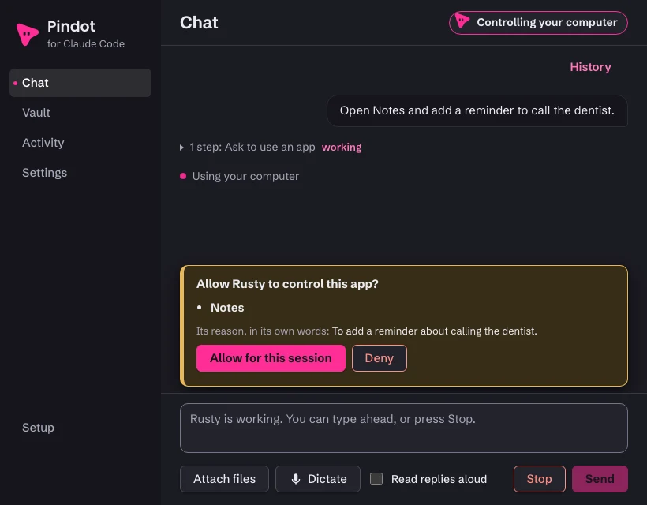
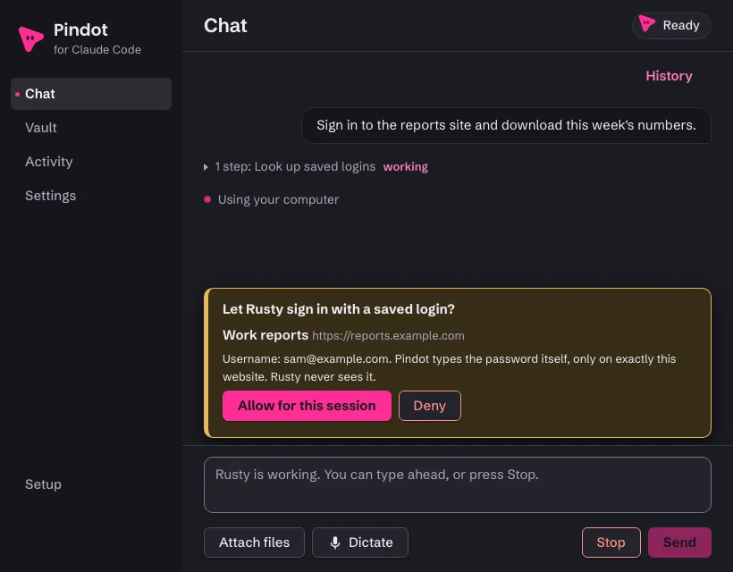
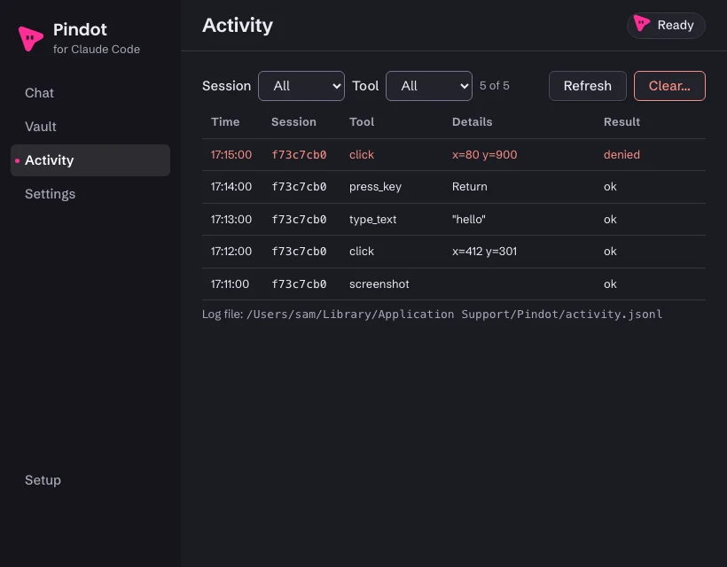
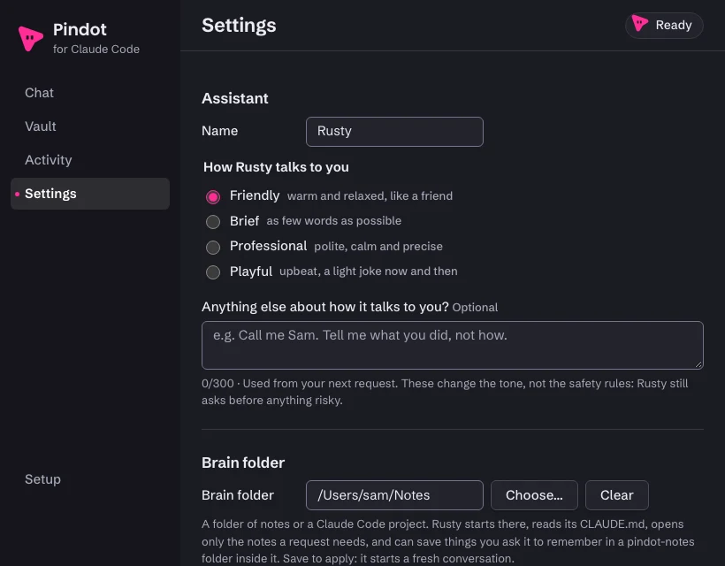

01
Talk, type or dictate.
Hold Fn on a Mac or Ctrl+Win on Windows, say it, let go. Rusty answers out loud, with a caption by the cursor if you like.
Rather type? The chat window is the same conversation. Drop in files and pictures, or speak into the box and nothing sends until you press Send.

02
He asks before he touches an app.
The first time Rusty needs an app, a window asks you, with his reason in his own words. Nothing moves until you press Allow. No answer in two minutes counts as no.
Terminals, code editors, file managers, system settings and password managers come with an extra red warning.

03
Signs in for you. Never sees the password.
Save logins in the Vault, or import them from Chrome, 1Password or Bitwarden. When Rusty needs to sign in, Pindot types it itself. The brain only ever gets the login's name and website.
It types only into the exact saved website, only into a password field, and only after you approve that login.

04
Every move on the record. Esc stops it all.
Activity lists every click, keypress and screenshot Rusty made, with the result. Filter it, or clear it.
Press Esc at any moment and he stops, stops talking and ends his turn. A banner across the top tells you whenever he has the controls.

05
Make him yours.
Rename him. Pick how he talks: friendly, brief, professional or playful. Point him at a folder of notes and he looks things up there, and remembers what you ask him to (with Claude Code as the brain, for now).
Or ask "show me how" and he points the way one step at a time, without clicking anything.
